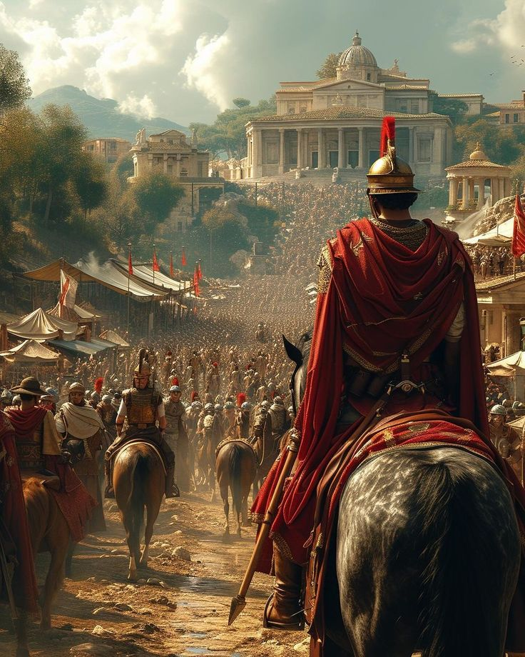
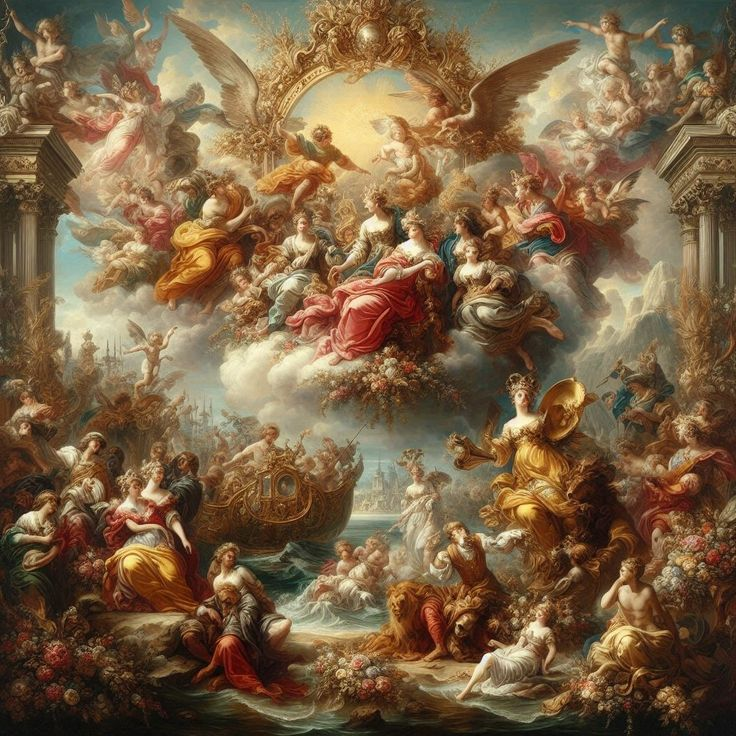
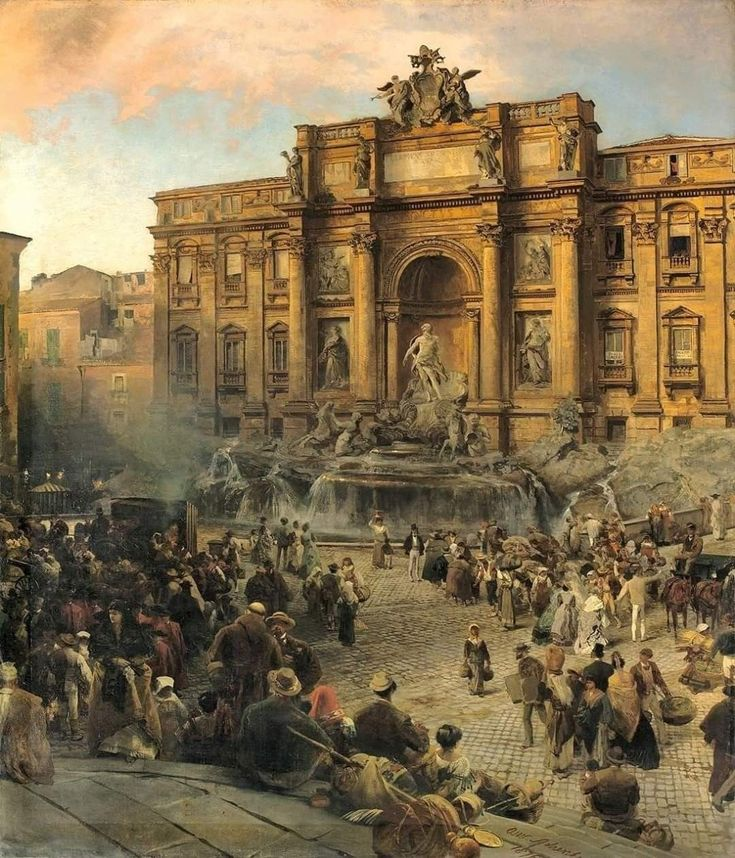

İtalya, Roma İmparatorluğu’nun merkezi olarak dünya tarihine yön vermiştir.İtalya, Roma İmparatorluğu’nun merkezi olarak dünya tarihine yön vermiş ve kültürel, siyasi ve mimari açıdan büyük bir miras bırakmıştır. Antik Roma şehirleri, yollar, amfitiyatrolar ve tapınaklar, o dönemin mühendislik ve sanat anlayışını yansıtır. Roma İmparatorluğu’nun etkisi, sadece İtalya’da değil, Avrupa ve dünya genelinde hukuk, yönetim, mimari ve kültür alanlarında hissedilir. Bu tarihî zenginlik, ziyaretçilere geçmişin izlerini sürerken aynı zamanda modern İtalya’nın kültürel çeşitliliğini ve sanatsal gelişimini de gözlemleme fırsatı sunar.

Rönesans dönemi İtalya’da başlamış ve sanat ile bilimi geliştirmiştirRönesans dönemi, İtalya’da başlayarak sanat ve bilimin gelişimine büyük katkı sağlamıştır. Floransa, Roma ve Venedik gibi şehirler, dönemin önemli sanatçıları ve bilim insanlarına ev sahipliği yapmış; Leonardo da Vinci, Michelangelo ve Raphael gibi isimler, hem resim hem de heykel alanında çığır açmıştır. Bu dönemde mimari, resim, heykel ve bilimsel keşifler bir arada ilerlemiş, insan merkezli düşünce ve estetik anlayış ön plana çıkmıştır. İtalya’daki Rönesans eserleri, ziyaretçilere hem tarihi hem de kültürel bir deneyim sunarak sanat ve bilimin iç içe geçtiği bir dönemi keşfetme imkânı sağlar..

Floransa, Venedik ve Roma tarihi açıdan en önemli şehirlerdendir. Floransa, Venedik ve Roma, İtalya’nın tarihi açıdan en önemli şehirlerinden biridir ve her biri farklı dönemlerin ve kültürel mirasın izlerini taşır. Floransa, Rönesans’ın doğduğu şehir olarak sanat ve mimaride devrim niteliğinde eserler sunar; Michelangelo’nun heykelleri ve Uffizi Galerisi gibi mekanlar bu zenginliği gözler önüne serer. Venedik, kanalları, köprüleri ve Gotik ile Rönesans mimarisini harmanlayan yapılarıyla eşsiz bir şehir deneyimi sunarken, Roma antik kalıntıları, Kolezyum ve Forum gibi yapılarıyla Roma İmparatorluğu’nun tarihini canlı tutar. Bu şehirler, ziyaretçilere hem geçmişi keşfetme hem de sanat ve kültürle iç içe bir deneyim yaşama imkânı verir.